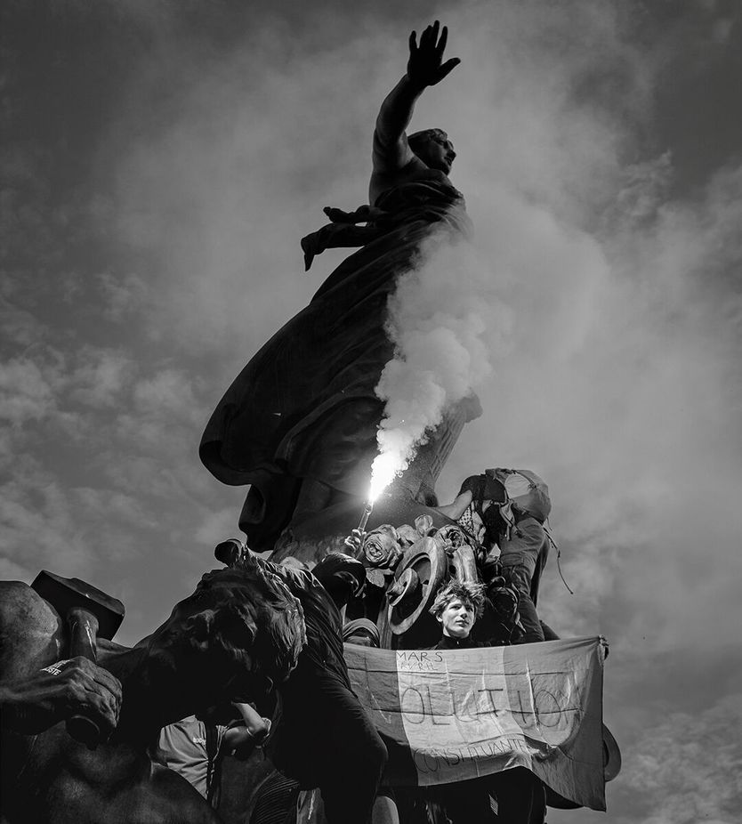

自由主义欧洲的痛苦
The agony of liberal Europe
中间派执政者做得远远不够，如今正在付代价

- 欧洲中间派正在集体挨罚：法国 50 万人上街，比利时、意大利、葡萄牙也有抗议；西班牙下月选举，法波明年选举，温和政党准备被清算。
- 作者驳斥「都怪移民」：上街的人多数没蒙面、是白人，诉求是生活成本和公共服务；打砸抢主要由有革命议程的无政府主义者煽动，与种族宗教无关。
- 真正的病因是财政：马克龙 2018 年还能掏几十亿欧元安抚黄马甲，如今只能推一份削赤字 0.4 个百分点的预算，政府还可能倒台，法德国债利差回到欧元危机水平。
- 危险在于连锁反应：中间派失去权力，欧盟就失去行动力，债市失灵会引发传染，对外也更软弱；作者说这一代自由派没有「不知情」的借口。
「刚踏进动乱时，路似乎很清楚——对实际工资下滑的愤怒、对资本家侵凌的愤怒、对议会不作为的愤怒；这些愤怒由煽动者点燃……理性与本能交战。」本周在法国城市聚众闹事的人，很少能认出这段话。但很多人会同意写下它的英美记者乔治·丹杰菲尔德。示威者被怒火吞没：对国家失灵的怒火，对束手无策的中间派执政者的怒火，对高物价和经济失序的怒火。对其中一些人来说，更是对「中间派政治」这个念头本身的怒火。
丹杰菲尔德写的是第一次世界大战前「自由主义英格兰的奇怪死亡」。如今有人预言自由主义欧洲会有同样惨淡的结局。纵火、暴民暴力、抢劫和大规模抗议，显示公民对领导人的绝望之深。法国有悠久的街头抗议传统，但上周末全国蒙面暴徒造成的暴力异常严重。比利时、意大利、葡萄牙也爆发了抗议。在即将到来的选举中——先是下个月的西班牙，随后是明年的法国和波兰——选民准备惩罚温和政党；在意大利，极右翼正从侧翼包抄以中间路线执政的民粹派梅洛尼。更远处还等着更具魅力的极端人物：法国的玛丽娜·勒庞、德国的爱丽丝·魏德尔。
美国和欧洲有很多人说，中间派只能怪自己。特朗普幸灾乐祸：欧洲着火，是因为领导人拒绝了他的建议、敞开边界，让每年数百万来自阿富汗、阿尔及利亚、叙利亚的移民涌入。MAGA 右翼如马斯克说，不断增长的穆斯林人口是最大威胁。有人以末世口吻、荒唐地谈「文明被抹除」或内战。连德国总理默茨本周也说，高移民率和外籍人士融入失败，是这场突发暴力动荡的部分原因。匈牙利新总理马扎尔也这么说。
这类分析要么怯懦，要么自私。毫无疑问，很多欧洲选民也想限制移民与庇护。但就这场暴力抗议而言，这个诊断完全错了。中间派真正面对的问题更复杂，也更难解决。
即便法国有些年轻抗议者穿着阿尔及利亚球衣、喊着挺巴勒斯坦的口号，今天欧洲的动荡也与种族或宗教无关。上周六法国有超过 50 万人上街，他们大多没蒙面，是白人。和其他国家一样，驱使他们的是生活成本和糟糕的公共服务。他们要更多燃油补贴、更多教育投入、更多补助。人数最多的一群，大概与民粹左翼的梅朗雄站在一起——这位年迈的煽动家、昔日托派，比起「伊斯兰国」的埃米尔，更像伯尼·桑德斯。
真正的暴力确实随后发生，但要归因于别的因素，都与种族无关。暴徒袭击公共建筑、警车等；也砸抢路易威登这类奢侈品店和移民经营的小店。警察没能维持秩序，此前还被指对学生抗议者施暴。很多暴力是由无政府主义者煽动和组织的，他们有革命政治议程。典型的一个：利摩日一座 19 世纪市政厅被烧后被捕的男子，30 多岁，法国白人。
批评者虽错，欧洲中间派确实面对真问题，法国显示了问题有多严重。第一是财政束缚，让有效的政治行动极难。2018—19 年「黄马甲」大抗议时，总统马克龙还能掏出几十亿欧元安抚。今天做不到了。法国花得太多、长得太慢——马克龙任内年均增速仅略高于 1%。
今年秋天，议员们要费力通过一份仅把赤字削减 0.4 个百分点、降至不可持续的 GDP 5% 的预算，而政府仍可能倒台。法国借得太多，市场对其政客又太没信心，法国国债对德国国债的利差已飙升到欧元危机时的水平。
中间派没有迎难而上，反而像是没了主意。本刊曾为马克龙这个激进中间派的大胆新旗手叫好。今天，中间派挤在一起取暖，所有活力都在两端。调查显示超过 80% 的法国人对未来悲观，尤其对经济。默茨极不受欢迎，可能被迫下台。他那些反移民的冷枪，恰恰反映他找不到话语和思路去挡住魏德尔和她的德国选择党。
难怪中间派要遭遇选举惨败。民调显示，西班牙中左翼首相桑切斯很可能很快被赶下台，由中右与民粹右翼的联盟取代。在法国，骚乱——以及「都怪移民」这个神话——可能把民粹右翼国民联盟的勒庞在明年 5 月送进总统府。民调显示暴力本周给她加了分。马克龙飞去海湾访问时，勒庞发表了一场颇有总统气派的演讲，呼吁恢复公共秩序。
法国的暴力应当把那些把头埋进沙子的中间派震醒，让他们正视失败的后果。国家陷入纷争，他们就会失去权力；失去权力，欧盟就会在别国飞奔时噎住。债市一旦失灵，金融传染会扩散。欧盟国家若纵容普京，他只会更具攻击性。丹杰菲尔德写作的年代，多数人对即将到来的灾难一无所知。今天的自由派没有这个借口。